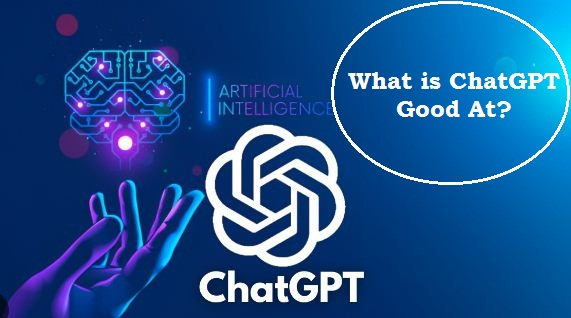
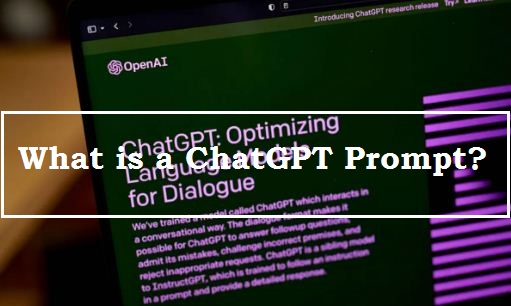

What is ChatGPT and How Does It Work?

Ever wished you could chat with a computer in a human-like manner? With ChatGPT, that's now possible. Developed by OpenAI, ChatGPT is an advanced language model that uses artificial intelligence to understand and respond to human language. By learning from vast amounts of data, ChatGPT generates creative and insightful responses that go beyond simple question-and-answer interactions. This is made possible through a deep neural network architecture that recognizes patterns and relationships in language, enabling ChatGPT to produce grammatically correct and semantically meaningful responses.
In this article, we will delve into what makes ChatGPT so special and explore how it works to produce such unique and intelligent responses. So, buckle up and prepare to be amazed by the capabilities of ChatGPT!
Table of Content
- Introduction
- What is ChatGPT and How does it work?
- What is ChatGPT Good at?
- What is a ChatGPT Prompt?
- ChatGPT and Copyright: What You Need To Know
- How To Use ChatGPT Without Copyright Issue?
- Is Bing AI Better Than ChatGPT AI?
ChatGPT and Copyright: What You Need To Know
Learn More: Click Here→
What is ChatGPT and How does it work?
ChatGPT is a language model developed by OpenAI that uses advanced artificial intelligence to understand and respond to human language. At its core, ChatGPT is designed to learn from vast amounts of data in order to generate coherent and contextually relevant responses to any given prompt. Unlike traditional chatbots, ChatGPT is capable of producing creative and insightful responses that go beyond simple question-and-answer interactions.
This is achieved through the use of a deep neural network architecture that allows ChatGPT to recognize patterns and relationships in language, and generate responses that are both grammatically correct and semantically meaningful. With its ability to understand and respond to complex human language, ChatGPT has the potential to revolutionize the way we communicate with technology.
One of the unique features of ChatGPT is that it can be fine-tuned to specific use
cases, such as customer service, social media management, and even creative writing. This allows
businesses and individuals to tailor ChatGPT's responses to their specific needs, making it a powerful
tool for automating certain aspects of communication.
Learn More: Click
Here→
Will AI Articles Be Removed For Copyrighting?
Learn More: Click Here→
What is ChatGPT Good At?
ChatGPT has proven to be a powerful tool for a wide range of natural language processing tasks. Its ability to understand context and generate coherent responses has made it particularly effective for applications such as customer service, social media management, and even creative writing. In fact, ChatGPT has been used to generate poetry, prose, and even scripts for movies and television shows. Its ability to learn and adapt to specific use cases makes it a versatile tool for businesses and individuals alike.
Furthermore, ChatGPT has shown great potential for use in education and research,
where it can assist with language translation, summarization, and even question-answering. As a result,
ChatGPT has become one of the most promising AI models for natural language processing and is rapidly
changing the way we communicate with technology.
Learn More: Click
Here→
Here's a list of areas where ChatGPT has shown great potential:
- Customer service: ChatGPT can understand customer inquiries and respond with coherent, helpful answers, making it a valuable tool for businesses that want to provide fast, efficient customer service.
- Social media management: ChatGPT can generate engaging social media content and respond to comments and messages, helping businesses build their brand and connect with customers.
- Creative writing: ChatGPT's ability to generate coherent and creative responses makes it a valuable tool for writers looking for inspiration or assistance with their work.
- Language translation: ChatGPT can translate text from one language to another with high accuracy, making it a useful tool for businesses and individuals that need to communicate across language barriers.
- Summarization: ChatGPT can quickly summarize long documents or pieces of text, making it a valuable tool for researchers and students.
- Question-answering: ChatGPT can answer a wide range of questions with high accuracy, making it a useful tool for researchers, educators, and anyone else who needs to quickly find information.
- Personalized recommendations: ChatGPT can analyze user behavior and language patterns to provide personalized recommendations for products, services, and content, making it a valuable tool for businesses that want to provide a personalized customer experience.
- Medical diagnosis and treatment: ChatGPT can assist doctors in analyzing medical records and suggest potential treatments based on symptoms, potentially improving patient outcomes.
- Psychological counseling: ChatGPT has the potential to be used as a virtual counselor or therapist, providing individuals with mental health support in a safe and accessible way.
In short, ChatGPT is a powerful AI model that is rapidly changing the landscape of natural language processing model with remarkable ability in various tasks, making it a highly valuable tool for businesses, researchers, and individuals.
How To Use ChatGPT Without Copyright Issue?
Learn More: Click Here→
What is a ChatGPT Prompt?
A prompt is basically a text-based input that is given to the ChatGPT model to generate a response or continuation. The prompt can be in the form of a message or question provided by a user, or it can be pre-set by the developer for a specific use case. The prompt acts as the starting point for ChatGPT to generate a response based on the context provided by the prompt and its training data.
For example, if the user asks ChatGPT "What is the capital of France?", the prompt provides context for ChatGPT to generate a response specifically about the capital of France, rather than a general response about France.
Prompts can be very helpful in providing more specific and targeted responses from ChatGPT. They allow the user to guide the conversation and ensure that the generated responses are relevant and useful. Additionally, prompts can be customized and tailored to specific use cases or industries, making ChatGPT a versatile tool for a wide range of applications.
Overall, prompts are a key feature of ChatGPT that enables the model to generate more accurate and relevant responses. They allow users to guide the conversation and get the information they need in a more efficient and effective way.
Is Bing AI Better Than ChatGPT AI?
Learn More: Click Here→